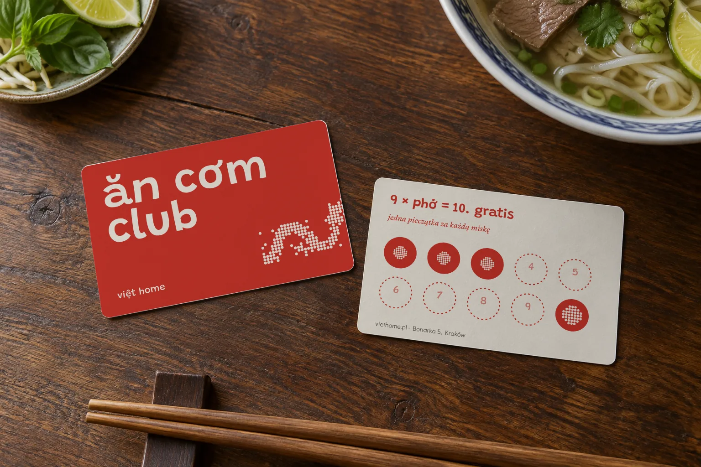

Việt Home
Reading the menu
Can someone find a dish, match it to its price and understand the dietary symbols?


- documents
- 26
- design artefacts
- 24
- coded fragments
- 87
- code assignments
- 162
A retrospective review of the finished design, coded in MAXQDA and ATLAS.ti. User interviews are planned and have not taken place yet.
Design choices to test
Consistent headings and price positions could make scanning easier. There is also a possible drawback: when a price sits far from its dish name, someone might follow the wrong line.
Ask guests to find a dish and compare two prices in both versions. Check whether they understand the symbols and can find the legend. Review the Vietnamese names with fluent readers and the text size on a printed copy.
Where the codes fall
Every coded fragment in this project, grouped into the twelve code families of the review. One fragment can carry several codes.
Coded on the artefacts
Regions marked on the design files, as coded in the project. Numbers match the notes under each image.
123456- 1
Rounded red heading 'przystawki' with 'Món khai vị' in serif italics.
Wayfinding cuesType roles & pairingMultilingual text
- 2
Dish names in bold, descriptions small; quieter than the heading.
Text densityType roles & pairing
- 3
Prices in a red column on the right.
Numerals & dataStable layout
- 4
Second category 'zupy · Súp' on the same page.
Wayfinding cues
- 5
Dotted dragon fills the lower third; strong, but kept below the list.
Recurring motifCompeting attention
- 6
Footer legend of dietary signs.
Symbols & legendsWayfinding cues
7891011- 7
'z ryżem · Cơm'.
Wayfinding cuesMultilingual text
- 8
Small subcategory labels (chicken, duck, beef) inside the list.
Wayfinding cues
- 9
Sixteen dishes on one page in a strict rhythm.
Text densityType roles & pairing
- 10
Prices aligned right; on wide rows the eye travels far from name to price.
Numerals & dataCompeting attention
- 11
Dragon reduced to a band at the bottom when the list is long.
Recurring motif
 13
13- ◻
Dense black text with Polish and English descriptions under each dish.
Before → afterText densityMultilingual text
- 13
Prices against dashed leaders at the far right; small and black.
Numerals & dataAccessibility risk

1415- 14
'ăn cơm club': the greeting becomes a loyalty programme name.
Brand touchpointsCultural referencesMultilingual text
- 15
Stamp grid: '9 × phở = 10. gratis'.
Currency & rewardsProgress to a goal
From the case text
17 passages of the case study are coded. A selection:
“The starting point was the restaurant’s old menu, documented in photographs on its Google Maps listing.”
“Across nine pages, dense black text, Polish and English descriptions, and prices against dashed lines gave many elements similar visual weight.”
“My redesign focused on the reading task at the table: find a category, scan the dishes and compare the relevant details.”
“I wanted the menu to express the character of a Vietnamese restaurant while giving names, prices and dietary signs distinct roles.”
“I organised the redesign into eight pages, moving from starters and soups through main dishes to drinks and wine.”
“Each category opens with a rounded red heading, paired with its Vietnamese name in serif italics.”
“This gives guests a visible point to enter a page before reading individual dishes.”
“Prices form a separate red column on the right, creating a consistent place to look when comparing options.”
“Spicy, vegetarian and gluten-free signs use a legend repeated at the foot of each page, so guests do not need to turn back for an explanation.”
Related reading
- Wolfe & Horowitz · 2017 · Five factors that guide visual search ↗The visual-search review suggests looking at where people start reading and whether headings and consistent positions help them find information.
- Scheibehenne, Greifeneder & Todd · 2010 · Choice overload: a meta-analysis ↗This review is a reminder to test the actual choice task, rather than assume that fewer options will always make it easier.
A tidier page does not automatically make choosing easier. The choice-overload review found that the effect of having more options varied between studies. The useful test here is whether guests can find and compare the information they need.
Interviews to run next
Who to speak to
Adults who order Vietnamese food, including first-time guests and Polish readers with different familiarity. Include fluent Vietnamese readers for language review; record any dietary needs only if relevant and volunteered.
Questions for individual interviews · IDI
- Tell me about the last time you chose from an unfamiliar restaurant menu.
- Where would you begin if you wanted a vegetarian main?
- Which information do you compare before deciding?
- What do these symbols and Vietnamese names mean to you?
Tasks to try
- Find a vegetarian main and explain how you identified it; do not infer ingredients from a symbol alone.
- Compare the prices of two rice dishes and point to each price.
- Locate the dietary legend and identify what information you would still ask staff about.
Note the route people take through the menu, any name–price mix-ups and how they explain the symbols. Alternate which version they see first. Check language and printed text size separately.
Topics for a group discussion · FGI
Optional: one group of 4–6 guests discusses category names and symbol explanations after individual sorting. Keep timed lookup and dietary comprehension individual; group agreement is not a food-safety verification.
Download the interview guide and consent notes ↓
About this review
The review uses the full case-study text, the design files shown in the portfolio and the published research listed above. Each coded fragment keeps the observation separate from its interpretation. The notes describe the design and what to test next; they do not report how real users responded.